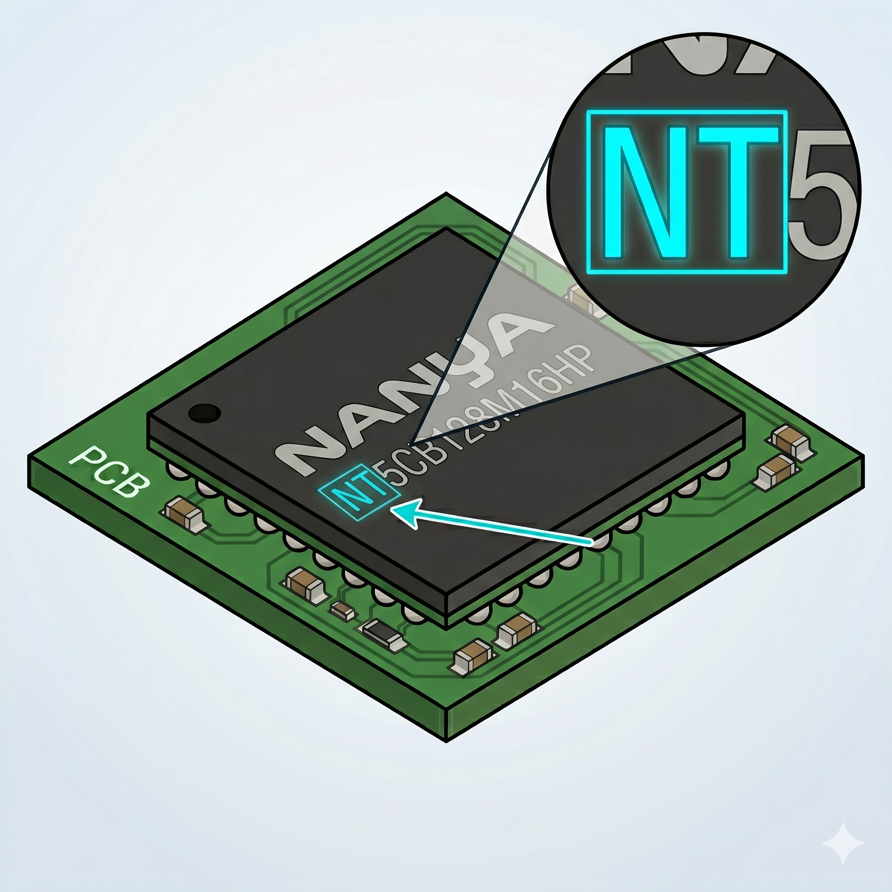

A Nanya Technology é uma tradicional fabricante taiwanesa com uma presença massiva no nosso volume diário de processamento físico. Diferente de outras marcas mais focadas em smartphones, os componentes da Nanya são os verdadeiros "cavalos de batalha" da eletrônica de consumo e de infraestrutura de TI. Ao desmontar equipamentos de rede (como roteadores, modems e switches), televisores, set-top boxes e placas-mãe de notebooks variados, o operador invariavelmente encontrará uma quantidade expressiva desses chips. Essa onipresença na bancada exige que a equipe de triagem esteja totalmente familiarizada com a sua assinatura visual.
A estrutura de nomenclatura adotada por eles é excelente para a
memorização rápida e para a tomada de decisão instantânea. A regra
primária é bastante direta: o código impresso a laser inicia com
as letras NT (Nanya Technology). O grande trunfo para
quem opera a separação, no entanto, é focar no caractere
imediatamente após esse prefixo. O primeiro número (ou letra) que
segue o NT divide o portfólio de forma perfeitamente
lógica, indicando a geração exata da memória. Bater o olho nessa
pequena sequência inicial permite ao técnico classificar e separar
fisicamente a peça em frações de segundo, sem qualquer necessidade
de consulta a catálogos.
• NT5... = Memória RAM padrão dedicada (SDRAM e linhas DDR de desktop/notebook).
• NT6... = Memória RAM mobile / low power (linhas LPDDR, focadas em dispositivos compactos).
| Tipo | Prefixo gravado no chip | Observação para triagem |
|---|---|---|
| SDRAM | NT5SV... / NT5S... |
Componentes obsoletos. Direcionar diretamente ao fluxo de refino. |
| DDR1 | NT5DS... |
Obsoletos. Direcionar ao fluxo de refino. |
| DDR2 | NT5TU... |
Baixíssima viabilidade. |
| DDR3 e DDR3L |
NT5C... / NT5CB... /
NT5CC...
|
NT5CB (1.5V padrão) e
NT5CC (1.35V Low Voltage). Muito frequentes
em placas sucateadas de modems e roteadores.
|
| DDR4 | NT5AD... / NT5AN... |
RAM padrão de alta circulação e boa viabilidade para o mercado reacondicional. |
| DDR5 | NT5W... |
Memória dedicada de nova geração. |
| LPDDR3 | NT6CL... / NT6TL... |
Mobile RAM de gerações mais antigas. |
| LPDDR4 | NT6AN... |
Mobile RAM padrão. |
| LPDDR4X | NT6AH... / NT6AP... |
Mobile RAM com maior eficiência energética. |
| LPDDR5 | NT6AC... |
Mobile RAM de altíssima velocidade para aparelhos modernos. |